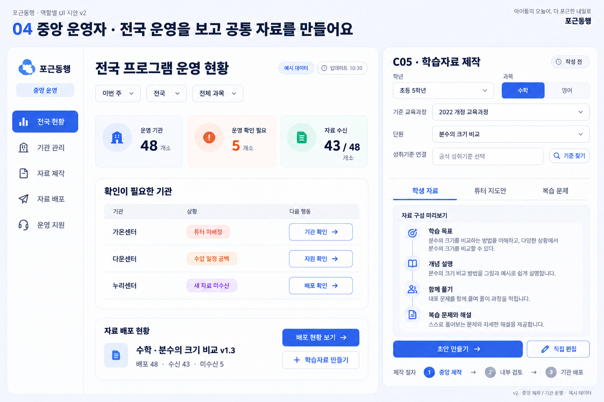

같은 자료로 수업하고, 복습하고, 질문합니다.
공통 자료는 학생 자료·튜터 지도안·복습 문제를 하나로 묶고, 차시와 버전을 수업 이후에도 유지합니다.
중앙은 공통 자료 제작·내부 검토·배포와 전국 현황 관리를 맡습니다. 각 기관은 매칭 검토·확정·변경·재배정과 수업 운영을 맡습니다.
이 보드의 메뉴는 시안 탐색용입니다. 이미지 안의 버튼은 실제 수업·신청·답변 기능이 아닙니다. 작은 화면에서는 이미지를 좌우로 이동하거나 크게 열어 볼 수 있습니다.